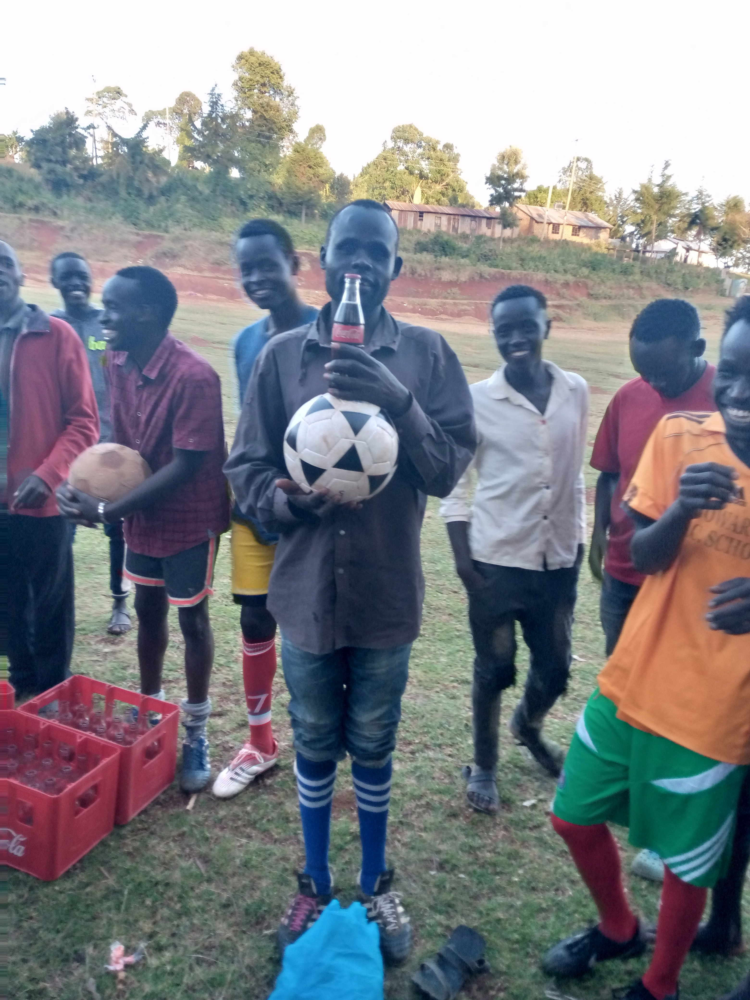
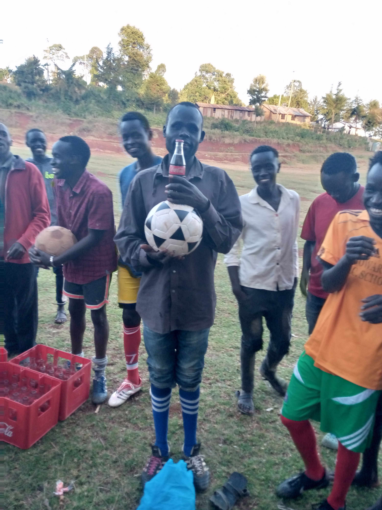

About Us
Lawich Football Club is a team founded by sisiya sub-location locals and named after a vilage around the place called lawich. The team is known by the name "THE MOONSHOOTERS". We have participated in many tournaments around the ward. It was founded in the Late 2017,then may 2018 obtained certificate, initiators were Nathan Kosgei and Solomon Kiptum, Mweshimiwa patron, Zephania Kiptoo Team Manager, Philemon Kiptoo as secretary, Evans Kiprono as Vice secretary and benard kiplimo as team coach. Sh.20@ from players aided in registration,,,a series of meetings were held until certificate was obtained. The first jersey was contributions from players and members of around 25. These are some of our images displayed below.
 

Events
- Daily Football training
- tournament participation
- Weekend friendlies home and away
Upcoming Events
- momii tournament commencing 22nd April 2023
- Here is our named squad for APRIL tournament
Contact Us
- COACHES: Titus Kiplagat TEL: 0722131705
- Whatsapp: https://chat.whatsapp.com/DHmzVBAmATiEvYfOgHQ2Dh
- Email: lawichfc@gmail.com